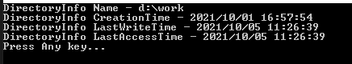
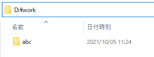
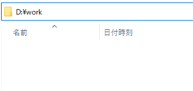
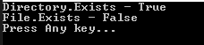
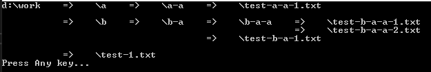
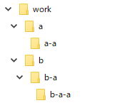
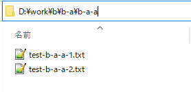

[C#] 44. ファイル(FileInfo)とディレクトリ(DirectoryInfo)を扱い
こんにちは。明月です。
この投稿はC#でファイル(FileInfo)とディレクトリ(DirectoryInfo)を扱いに関する説明です。
以前の投稿でIOを通ってファイルを作成して読み込む方法に関して説明しました。
link - [C#] 42. ファイルを扱い(IO)とファイルメタデータ(FileInfo)を使い方
今度はファイルを作成して読み込みより、ディレクトリとファイルのメタデータを利用してディレクトリとファイルに関する情報を取得して探索する方法に関して説明します。
FileInfoクラスはファイルに関するメタデータ、つまり、ファイルのパス、サイズ、作成日時、修正日時に関する情報があります。
ディレクトリは実際にバイナリデータで存在することではなく、OSで管理するメタデータです。FileInfoとみたいにDirectoryInfoがありますが、ディレクトリ(フォルダ)に関する情報があります。
using System;
using System.IO;
namespace Example
{
class Program
{
// 実行関数
static void Main(string[] args)
{
// ディレクトリのメタデータ取得
var dirinfo = new DirectoryInfo("d:\\work");
// ディレクトリのプール名
Console.WriteLine("DirectoryInfo Name - " + dirinfo.FullName);
// ディレクトリの作成日時
Console.WriteLine("DirectoryInfo CreationTime - " + dirinfo.CreationTime);
// ディレクトリの更新日時
Console.WriteLine("DirectoryInfo LastWriteTime - " + dirinfo.LastWriteTime);
// ディレクトリのアクセス日時
Console.WriteLine("DirectoryInfo LastAccessTime - " + dirinfo.LastAccessTime);
// 任意のキーを押してください
Console.WriteLine("Press Any key...");
Console.ReadLine();
}
}
}

ファイルのメタファイルみたいにディレクトリのメタ情報を取得することができます。
DirectoryInfoにはFileinfoと違い、ディレクトリを追加、削除があります。
ファイル生成は当該なファイルに関するバイナリデータが必要ですが、ディレクトリの場合はメタデータ追加、削除だけで扱えるからです。
using System;
using System.IO;
namespace Example
{
class Program
{
// 実行関数
static void Main(string[] args)
{
// ディレクトリのメタデータを取得
var dirinfo = new DirectoryInfo("d:\\work\\abc");
// ディレクトリに追加
dirinfo.Create();
// 任意のキーを押してください
Console.WriteLine("Press Any key...");
Console.ReadLine();
}
}
}

ディレクトリが追加されました。
using System;
using System.IO;
namespace Example
{
class Program
{
// 実行関数
static void Main(string[] args)
{
// ディレクトリのメタデータを取得
var dirinfo = new DirectoryInfo("d:\\work\\abc");
// ディレクトリに削除
dirinfo.Delete();
// 任意のキーを押してください
Console.WriteLine("Press Any key...");
Console.ReadLine();
}
}
}

ディレクトリが削除されました。
そしてFileInfoとDirectoryInfoの場合はインスタンスを生成して使わなければならないですが、毎度、メタデータを使うためにインスタンスを生成することには気になります。
それでstaticクラスでもメタデータを取得することができます。
using System;
using System.IO;
namespace Example
{
class Program
{
// 実行関数
static void Main(string[] args)
{
// ディレクトリ存在可否
Console.WriteLine("Directory.Exists - " + Directory.Exists("d:\\work"));
// ファイル存在可否
Console.WriteLine("File.Exists - " + File.Exists("d:\\work\\test.txt"));
// 任意のキーを押してください
Console.WriteLine("Press Any key...");
Console.ReadLine();
}
}
}

Existsの関数はFileInfoとDirectoryInfoにもある関数ですが、FileとDirectoryのstaticクラスにもメタデータを使えます。
このFileとDirectoryクラスで単純にファイルとディレクトリのメタ情報を取得するクラスですが、探索アルゴリズムを利用して作成すれば簡単なファイル探索プログラムを作成することができます。
using System;
using System.Collections.Generic;
using System.IO;
using System.Text;
namespace Example
{
// ディレクトリとファイルの情報クラス
class DirNode
{
// ディレクトリのパス
public string Path { get; private set; }
// サブディレクトリ
public List<DirNode> Dirs { get; private set; }
// サブファイル
public List<string> Files { get; private set; }
// コンストラクタ
public DirNode(string path)
{
// インスタンスを生成
this.Dirs = new List<DirNode>();
this.Files = new List<string>();
this.Path = path;
}
}
class Program
{
// ディレクトリの情報を取得関数
static DirNode GetDirectoryInfo(string path)
{
// ディレクトリが存在がなければ
if (!Directory.Exists(path))
{
// nullリターン
return null;
}
// ディレクトリとファイルの情報クラスのインスタンスを生成
var dir = new DirNode(path);
// サブディレクトリの情報取得
var subdirs = Directory.GetDirectories(path);
// 繰り返しでサブディレクトリを探索
foreach (var d in subdirs)
{
// サブディレクトリを探索(再帰関数)
dir.Dirs.Add(GetDirectoryInfo(d));
}
// サブファイルの情報を取得
dir.Files.AddRange(Directory.GetFiles(path));
return dir;
}
// コンソールに出力するStringデータ作成
static void BuildPrintString(DirNode dir, StringBuilder sb, int space = 0, string replace = null)
{
// スペース位置設定
var pos = space;
// 改行になればスペースを入れ、現在位置
var insertSpace = new Action(() =>
{
// 改行
sb.AppendLine();
// 位置程にスペースを入れる
for (int j = 0; j < pos; j++)
{
// バッファーにスペースを書き込む。
sb.Append(" ");
}
});
// ルートディレクトリを置換
var buf = replace != null ? dir.Path.Replace(replace, "") : dir.Path;
// バッファーに書き込む。
sb.Append(buf);
// スペース位置を追加
pos = pos + buf.Length;
// サブディレクトリがあれば
if (dir.Dirs.Count > 0)
{
// サブディレクトリ程に探索
for (int i = 0; i < dir.Dirs.Count; i++)
{
// 二つ目から改行
if (i != 0)
{
// 改行 + スペース
insertSpace();
}
// 探索マークをバッファーに書き込む
sb.Append(" => ");
// 再帰関数で探索
BuildPrintString(dir.Dirs[i], sb, pos + 10, dir.Path);
}
// 改行 + スペース
insertSpace();
}
// サブファイルがあれば
if (dir.Files.Count > 0)
{
// サブファイル程に探索
for (int i = 0; i < dir.Files.Count; i++)
{
// 二つ目から改行
if (i != 0)
{
// 改行 + スペース
insertSpace();
}
// 探索マークをバッファーに書き込む
sb.Append(" => ");
// ファイル名をバッファーに書き込む
sb.Append(dir.Files[i].Replace(dir.Path, ""));
}
}
}
// 実行関数
static void Main(string[] args)
{
// d:\\workディレクトリの情報取得(サブディレクトリを含め)
var dir = GetDirectoryInfo("d:\\work");
// StringBuilderインスタンスを生成
var sb = new StringBuilder();
// コンソールに出力するStringのデータを作成
BuildPrintString(dir, sb);
// コンソールに出力
Console.WriteLine(sb.ToString());
// 任意のキーを押してください
Console.WriteLine("Press Any key...");
Console.ReadLine();
}
}
}



上の例でディレクトリからサブディレクトリを呼び出す時にはディレクトリ探索する再帰関数を通ってサブディレクトリとサブファイルを探索します。
再帰関数というのはstack interruptが掛ける作業なので、性能が遅くなるし、overflow可能性もあるので、効率性が悪いですが、ソースがすごく見やすくみえるし、この探索アルゴリズムを作る時にしやすく設計と実装が可能なのでよく使います。
ここまでC#でファイル(FileInfo)とディレクトリ(DirectoryInfo)を扱いに関する説明でした。
ご不明なところや間違いところがあればコメントしてください。
- [C#] 51. Reflection機能を使い方 - Method2021/10/14 18:34:21
- [C#] 50. Reflection機能を使い方 - Class2021/10/13 18:34:13
- [C#] 49. Operator(演算子)のオーバーロードを使い方2021/10/12 18:28:42
- [C#] 48. IEnumerableとIEnumerator、そしてyieldキーワード2021/10/11 19:49:33
- [C#] 47. Nugetを使い方(外部ライブラリ)とデータベース(MariaDB(Mysql))を使い方、そしてトランザクション(Transaction)2021/10/08 18:58:57
- [C#] 46. データベース(MSSQL)に接続する方法2021/10/07 18:39:58
- [C#] 45. ネットワークソケット通信(Socket)を使い方2021/10/06 19:06:25
- [C#] 44. ファイル(FileInfo)とディレクトリ(DirectoryInfo)を扱い2021/10/05 19:29:34
- [C#] 43. ストリーム(Stream)とバイナリ(byte[])、エンコード(Encoding)、そしてusingを使い方とIDisposableインターフェース2021/10/04 18:33:04
- [C#] 42. ファイルを扱い(IO)とファイルメタデータ(FileInfo)を使い方2021/10/01 20:10:21
- [C#] 41. Taskクラスとasync、awaitを使い方2021/10/01 18:59:14
- [C#] 40. Linqを利用した並列処理(Parallel)を使い方2020/05/13 17:37:13
- [C#] 39. lockキーワードとdeadlock(デッドロック)2019/07/24 00:57:35
- [C#] 38. ThreadPoolの使い方2019/07/23 00:05:40
- [C#] 37. スレッド(Thread)を使い方、Thread.Sleep関数を使い方2019/07/22 23:45:05
- [Javascript] Node.jsをインストールしてReactを使う方法2022/03/23 18:01:34
- [Java] 63. Spring bootでcronスケジューラとComponentアノテーション2022/03/16 18:57:30
- [Java] 62. Spring bootでWeb-Filterを設定する方法(Spring Security)2022/03/15 22:16:37
- [Java] JWT(Json Web Token)を発行、確認する方法2022/03/14 19:12:58
- [Java] 61. Spring bootでRedisデータベースを利用してセッションクラスタリング設定する方法2022/03/01 18:20:52
- [Java] 60. Spring bootでApacheの連結とロードバランシングを設定する方法2022/02/28 18:45:48
- [Java] 59. Spring bootのJPAでEntityManagerを使い方2022/02/25 18:27:48
- [Java] 58. EclipseでSpring bootのJPAを設定する方法2022/02/23 18:11:10
- [Java] 57. EclipseでSpring bootを設定する方法2022/02/22 19:04:49
- [Python] Redisデータベースに接続して使い方2022/02/21 18:23:49
- [Java] Redisデータベースを接続して使い方(Jedisライブラリ)2022/02/16 18:13:17
- [C#] Redisのデータベースを接続して使い方2022/02/15 18:46:09
- [CentOS] Redisデータベースをインストールする方法とコマンドを使い方2022/02/14 18:33:07
- [Design pattern] 3-6. ステートパターン(State pattern)2021/11/17 20:04:47
- [Design pattern] 3-5. メメントパターン(Memento pattern)2021/11/16 20:01:36